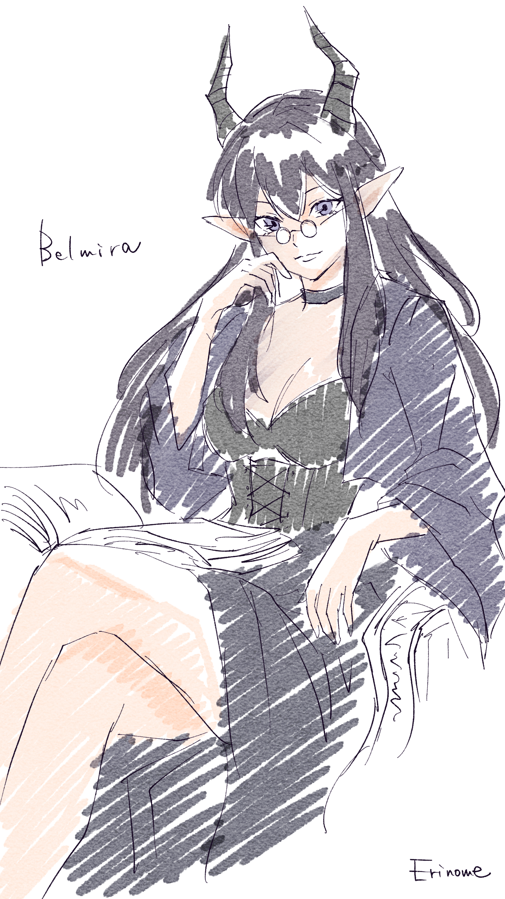

ベルミラ・ノクティア
Belmira Noctia
夜人族の魔女 / 魔導書店主
プロフィール
夜人(よるびと)族の魔女。街から少し離れたところに魔導書店(店名未定)を構えている。
夜人族は古来よりその身体的特徴から魔法に長けた者が多く、ベルミラもその一人。角は魔力を蓄えるタンクの役割を、耳はアンテナのような役割を果たしている。
個体数が少なくなってきている種族であることに加え、魔法を扱える人間が少ないことから、夜人族に対して恐怖心を抱く者も少なくない。黙っていても目立ってしまうため、街から少し離れて暮らしている。
魔導書店について
魔導書とは、いわば魔法の取扱説明書。所持しているだけで魔力を底上げする効果を持つものも多く、中には伝承としてしか残っていないような古い国の物語が記された書物もある。
元々は趣味で本を集めていただけだったが、さすがに増えすぎたため、保管と販売を兼ねて魔導書店を開くことに。減らすつもりが、今もどんどん増え続けているらしい。
ちょっとしたこと
最近、なぜか近くの文字が見えづらくなってきたらしく、不思議なメガネ(老眼鏡)をかけるようになった。